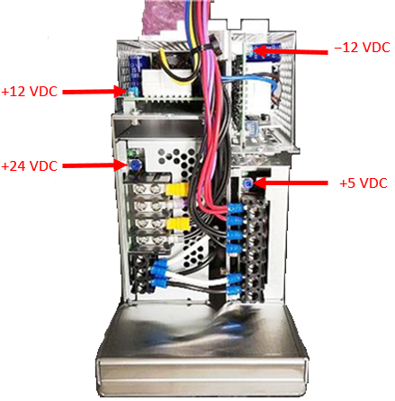
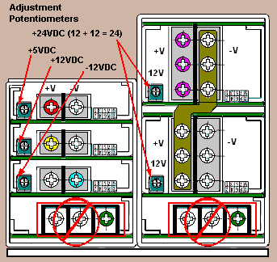
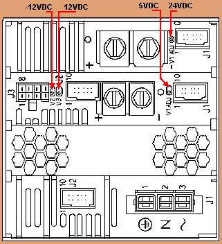
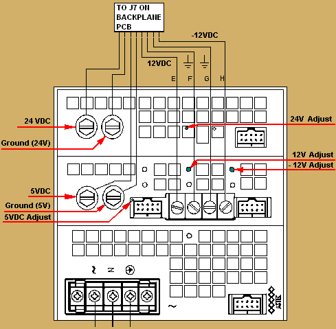

This procedure describes how to locate the voltage adjustment potentiometers and make minor adjustments to the power supply voltages.
Figure 24: New Cosel (ROHS) power supply voltage adjustment potentiometers

Figure 25: Old Cosel power supply voltage adjustment potentiometers

Figure 26: Magnetek power supply voltage adjustment potentiometers

Figure 27: Astec power supply voltage adjustment potentiometers

Table 49: Power Supply Voltage Specification
Voltage (Volts DC)
Adjustable
Specification (Volts DC)
-5
No
-5 ±0.3 (-4.7 to -5.3)
+5
Yes
+5 ±0.15 (+4.85 to +5.15)
+12
Yes
+12 ±0.3 (+11.7 to +12.3)
-12
Yes
-12 ±0.5 (-11.5 to -12.5)
+24
Yes
+24 ±0.5 (+23.5 to +24.5)
-5.2
No
+5.2 ±0.3 (-4.9 to -5.5)
Check and adjust the power supply voltage.
Connect a DC volt meter to the labeled test point located along the top edge of the I/O PCB.
Verify that the volt meter reading and the voltage displayed in the Temp./Voltage/Vacuum window of the user interface agree.
Note: The I/O PCB could be misreporting the voltages.
Identify the correct adjustment potentiometer. Refer to the reference drawings in this procedure.
Note: The reference drawings show the end of the power supply that is near the luminometer.
Adjust the voltage to within specification using the adjustment potentiometers on the power supply.
Note:
The new Cosel power supply uses four different modules to supply +24 V, +12 V, -12 V, and +5 V.
The old Cosel power supply uses two 12 V supplies connected in series to provide 24 V. Adjust each 12 V output to 12.12 V so that the total output is approximately 24.25 V.
The load affects the voltage slightly, so it is best to fine-tune the voltage with the system initialized and all temperatures within specification. The power supply can be removed from the instrument for adjustment, when it is difficult to reach the adjustment potentiometers.
The ground pins on the wire harness are isolated and not tied together until connected to the backplane.